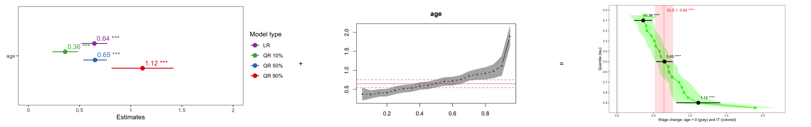
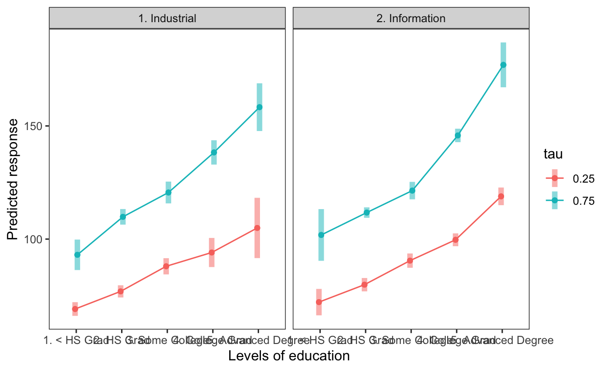

This post as ca. 18 minutes video
Get 3 most importance quantiles
We’ll use the Wage dataset from the ISLR package to study the influence of job type, age, and education on American salaries. We first create four simple models: one classic linear regression that calculates average wages, and three quantile regressions. The low quantile (tau = 0.1) calculates wages of low earners, the median quantile (tau = 0.5) gets median wages, and the high quantile (tau = 0.9) describes wages of top 10% earners. We will then use the {sjPlot} package to plot estimates of these four models for all predictors at the same time.
library(tidyverse) # use & thank me later ;)
library(ISLR) # provides Wage dataset
theme_set(theme_test()) # beautifies plots
library(quantreg) # extra video on my channel
lr <- lm(wage ~ jobclass + age, Wage)
qr10 <- rq(wage ~ jobclass + age, Wage, tau = 0.1)
qr50 <- rq(wage ~ jobclass + age, Wage, tau = 0.5)
qr90 <- rq(wage ~ jobclass + age, Wage, tau = 0.9)
library(sjPlot) # extra video on my channel
plot_models(lr, qr10, qr50, qr90,
show.values = TRUE,
m.labels = c("LR", "QR 10%", "QR 50%", "QR 90%"),
legend.title = "Model type")
While this plot allows us to compare results among models, different predictors usually have very different magnitudes of estimates. High estimates are displayed in a better way, while low estimates are underrepresented and hard to see. This problem could be solved with a single line of code by using the “rm.terms” (remove terms) argument. However, when we have many predictors and many categories per predictor, this solution becomes very inconvenient. To be honest, it can become a huge pain in the neck.
plot_models(lr, qr10, qr50, qr90,
rm.terms = "jobclass [2. Information]",
show.values = TRUE,
m.labels = c("LR", "QR 10%", "QR 50%", "QR 90%"),
legend.title = "Model type")
So, if you are only interested in a few important quantiles and have models with a low number of predictors, then the plot_model() function is the way to go. However, if you want to explore the entire distribution of quantiles, creating a new model for every quantile would be necessary. This approach would result in too much code and the plot might look cluttered with too many estimates.
Get all quantiles
A more elegant solution for obtaining more quantiles is to use the “tau” argument with a sequence of quantiles of your choice. This way, we can easily create multiple models at once, say 20. Using the “summary” and “plot” functions would allow us to plot all predictors for all quantiles simultaneously. However, this visualization is hardly customizable and we cannot include estimates or p-values like {sjPlot} did.
qr_all <- rq(wage ~ jobclass + age, Wage,
tau = seq(.05, .95, by = 0.05))
summary(qr_all) %>% plot()
To address this issue, I developed the idea of combining the visual results of {sjPlot} and {quantreg} in order to create beautiful and highly customizable plot. To do that, we need two tidy datasets – one containing the quantile regression model results and the other comprising the linear regression model results. This approach is necessary because, despite the fact that the linear regression results are plotted in red by the {quantreg} package, which means that they have been calculated, I could not extract them from the model. If you know how, please put the solution in the comments below for the whole community.

Get tidy results of multivariable models
summary(lr)
Call:
lm(formula = wage ~ jobclass + age, data = Wage)
Residuals:
Min 1Q Median 3Q Max
-107.234 -24.751 -6.311 16.308 197.278
Coefficients:
Estimate Std. Error t value Pr(>|t|)
(Intercept) 76.6298 2.8320 27.06 <2e-16 ***
jobclass2. Information 15.9214 1.4732 10.81 <2e-16 ***
age 0.6447 0.0638 10.11 <2e-16 ***
---
Signif. codes: 0 '***' 0.001 '**' 0.01 '*' 0.05 '.' 0.1 ' ' 1
Residual standard error: 40.16 on 2997 degrees of freedom
Multiple R-squared: 0.07435, Adjusted R-squared: 0.07373
F-statistic: 120.4 on 2 and 2997 DF, p-value: < 2.2e-16We need to tidy up model results because the classic summary() function of any model does not produce them. For that, we will use, suprise suprise, the tidy() function from the {rstatix} package. Here, it is important to use the se.type = “nid” argument because otherwise, the default option of tidy() (se.type = “rank”) would produce slightly different confidence intervals (CIs) compared to {sjPlot} CIs, which would then not match on the plot. Having only Standard-Error will allow us to calculate 95% CIs on our terms! So, we would feel more powerful and in control. (some ironic picture of powerful personality, like Held in unterhose)
lr_preds <- lr %>%
rstatix::tidy(se.type = "nid") %>% # se.type = "rank"
mutate(LCL = estimate - 1.96 * std.error,
UCL = estimate + 1.96 * std.error) %>%
rstatix::add_significance("p.value") %>%
filter(term != "(Intercept)") %>%
select(-std.error, -statistic) %>%
rename(p = p.value.signif)
qr_preds <- qr_all %>%
rstatix::tidy(se.type = "nid") %>%
mutate(LCL = estimate - 1.96 * std.error,
UCL = estimate + 1.96 * std.error) %>%
filter(!grepl("Intercept", term)) %>%
rstatix::add_significance("p.value") %>%
select(-std.error, -statistic) %>%
rename(p = p.value.signif)We then remove the intercept because there is a better way to deal with it and we’ll come to it in a moment. To do so, we can filter the intercept out using the exclamation mark. However, intercepts are often written in a strange way, with brackets for example, which can be confusing. Therefore, we can use the “grepl” function to get rid of it. The “grepl” function searches for matches to the pattern we specify. In our case, the word “intercept” itself is the pattern. (Note that “grepl” also takes missing values in our variable “term” as not matching a non-missing pattern.)
Finally, we can use the “add_significance” function from the {rstatix} package to add significance stars as a new column. Here’s a quick interpretation of the stars:
Stars | P-value Interpretation |
|---|---|
character | character |
ns | p ≥ 0.05 |
* | p < 0.05 |
** | p < 0.01 |
*** | p < 0.001 |
**** | p = 0 |
n: 5 | |
By the way, the double colon is a convenient way to use only one particular function from a specific package. For instance, in this case, I don’t need to use the {rstatix} package anymore. Using the double colon takes less memory on a computer and produces fewer conflicts. For example, the “tidy” function is present in three different packages. But I digress, so, let’s get back to the topic at hand.
?tidy()Help on topic 'tidy' was found in the following packages:
Package Library
rstatix /Library/Frameworks/R.framework/Versions/4.3-x86_64/Resources/library
broom /Library/Frameworks/R.framework/Versions/4.3-x86_64/Resources/library
generics /Library/Frameworks/R.framework/Versions/4.3-x86_64/Resources/library
Using the first match ...Finally, we remove unnecessary columns from our tidy dataset and rename the p-value column. We are now ready to produce our beautiful and informative plot.
Create a fancy plot step by step
To ensure maximum clarity and learning, let’s program that fancy plot step-by-step.
1. Filter out one predictor
First, we’ll focus on one predictor at a time. Let’s filter out the predictor ‘age’ and produce two smaller tidy datasets, one for linear regression and another for quantile regression.
2. Plot all quantiles
To plot the estimates of QR and their 95% CIs, we’ll use a “ggplot” command with classic “geom_point”, “geom_line” and “geom_ribbon” functions. We’ll display all possible tau values on the x axis and finally, we’ll flip the coordinates in order to make this plot similar to {sjPlots} solution. It looks much nicer than the grey plot, doesn’t it? :)
q_plot <- ggplot(data = data_qr, aes(x = tau, y = estimate))+
geom_point(color = "green", size = 3)+
geom_line( color = "green", size = 1)+
geom_ribbon(aes(ymin = LCL, ymax = UCL), fill = "green", alpha = 0.25)+
scale_x_reverse(breaks = seq(from = 0, to = 1, by = 0.1))+
coord_flip()
q_plot
3. Put intercept on top of the plot
Another disadvantage of the grey plot is that it sometimes doesn’t show the intercept for some predictors. For example, it doesn’t show the intercept for “age,” but it does for “jobclass.” We’ll fix this by using the “geom_hline” function to always put the Intercept on our plot. This will display the strength of the evidence against the null hypothesis. The further our estimates are from the intercept, the stronger evidence we have against the null hypothesis.
# yintercept instead of xintercept because the plot is flipped
q_plot2 <- q_plot +
geom_hline(yintercept = 0, alpha = .3, size = 1)
q_plot2
4. Put linear model results on the plot
The next step is to put linear model results on our plot with “geom_line” and “annotate” functions. Here, we could have used the numbers from the dataset directly. But imagine that you need to do this for 10 or 20 predictors, and you’ll see that we need to somehow automate the process of putting estimates on the plot. That’s what we do next.
data_lm# A tibble: 1 × 6
term estimate p.value LCL UCL p
<chr> <dbl> <dbl> <dbl> <dbl> <chr>
1 age 0.645 1.24e-23 0.520 0.770 **** Namely, we use our small dataset with only “age” predictor and:
- First, we use the estimate as a line.
- Then, we use the “annotate” function to create a rectangle with Lower and Upper Confidence Limits for y-coordinates and Infinity for x-coordinates.
- The opacity, color, and size of our lines would allow us to make our plot more appealing than the {quantreg} plot.
- Finally, we’ll put the estimate and the p-value stars as a piece of text on our plot in the location of our choice. We can control the location via “x” and “y” arguments and adjust it horizontally via “hjust” or vertically via “vjust” when we need to. The “paste” command helps us to combine a real text with a number and significance stars into a single piece of information.
# OLS
q_plot3 <- q_plot2 +
geom_hline(yintercept = data_lm$estimate,
alpha = .2, color = "red", size = 1)+
annotate(geom = "rect", alpha = .1, fill="red",
ymin = data_lm$LCL, ymax = data_lm$UCL,
xmin = -Inf, xmax = Inf)+
annotate(geom = "text", color="red",
x = 0, y = data_lm$estimate, hjust = -.1,
label = paste("OLS = ", round(data_lm$estimate, 2), data_lm$p ))
q_plot3
5. Put three most important quantiles on the plot
data_qr# A tibble: 19 × 7
term estimate p.value tau LCL UCL p
<chr> <dbl> <dbl> <dbl> <dbl> <dbl> <chr>
1 age 0.371 2.09e- 4 0.05 0.175 0.566 ***
2 age 0.360 1.82e- 8 0.1 0.235 0.485 ****
3 age 0.401 2.16e-12 0.15 0.289 0.512 ****
4 age 0.411 1.53e-12 0.2 0.297 0.524 ****
5 age 0.472 2.00e-15 0.25 0.356 0.587 ****
6 age 0.513 0 0.3 0.398 0.627 ****
7 age 0.531 0 0.35 0.418 0.645 ****
8 age 0.584 0 0.4 0.472 0.696 ****
9 age 0.602 0 0.45 0.488 0.715 ****
10 age 0.652 0 0.5 0.536 0.767 ****
11 age 0.705 0 0.55 0.579 0.831 ****
12 age 0.713 0 0.6 0.583 0.843 ****
13 age 0.756 0 0.65 0.622 0.890 ****
14 age 0.850 0 0.7 0.708 0.991 ****
15 age 0.891 0 0.75 0.728 1.05 ****
16 age 0.919 0 0.8 0.732 1.10 ****
17 age 0.974 0 0.85 0.762 1.19 ****
18 age 1.12 6.20e-13 0.9 0.813 1.42 ****
19 age 1.89 0 0.95 1.59 2.20 **** Similar to the results of linear regression, we can easily put the results of the three most important quantiles on our plot. There are only two small differences:
- First, we use “geom_pointrange” instead of “geom_line” and “geom_rect”.
- Secondly, since our dataset for age now contains 19 different quantiles, we need to specify which line of the estimate or confidence intervals we should use. In our case, we’d use 2 for the first quantile (tau = 0.1), 10 for the median regression (tau = 0.5), and 18 for the ninth quantile (tau = 0.9).
# tau = .1
q_plot4 <- q_plot3 +
annotate(geom = "pointrange",
x = .1, color = "black", size = 1, linewidth = 1,
y = data_qr$estimate[2],
ymin = data_qr$LCL[2],
ymax = data_qr$UCL[2])+
annotate(geom = "text",
x = .1 - 0.05,
y = data_qr$estimate[2], hjust = -.14,
label = paste( round(data_qr$estimate[2], 2), data_qr$p[2] ))+
# tau = .5
annotate(geom = "pointrange",
x = .5, color = "black", size = 1, linewidth = 1,
y = data_qr$estimate[10],
ymin = data_qr$LCL[10],
ymax = data_qr$UCL[10])+
annotate(geom = "text",
x = .5 - 0.05,
y = data_qr$estimate[10], hjust = -.14,
label = paste( round(data_qr$estimate[10], 2), data_qr$p[10] ))+
# tau = .9
annotate(geom = "pointrange",
x = .9, color = "black", size = 1, linewidth = 1,
y = data_qr$estimate[18],
ymin = data_qr$LCL[18],
ymax = data_qr$UCL[18])+
annotate(geom="text",
x = .9 - 0.05,
y = data_qr$estimate[18], hjust = -.14,
label = paste( round(data_qr$estimate[18], 2), data_qr$p[18] ))
q_plot4
Putting more than 3 quantiles on this plot would unnecessarily clutter it. But using the 3 most important ones seems optimal to me. And while estimates are useful, since we don’t need to stair at the axis below, we don’t really need the significance stars. And here’s why: a simple trick to quickly extract inference from this plot is to look whether the confidence intervals cross the grey line. If they do, we usually can’t reject the Null Hypothesis. If they don’t, we can. Interestingly, the trick with confidence intervals works for comparing models too. So, when red and green CIs don’t overlap, the models differ significantly. In this concrete example, that would mean that the classic linear regression, which says that an increase in age of one year would increase the salary by $640 on average, overpromises wage rise for low earners and underpromises for folks who started their career with high salary from the very beginning. Despite the fact that {quantreg} package doesn’t compare the taus among each other, even when different quantile models don’t overlap, I would see them as significantly different.
So, this picture combines the capabilities of {sjPlot} and of {quantreg} packages (halliluja!). But that is just a beginning, because we now can put all the building blocks together and create a function that automates this procedure for any predictor in a multivariable model.
Create a function to automate plot creation
If you’re wondering why I didn’t give you the function at the very beginning, the answer is simple: you might have learned less! Besides, copy-pasting functions, which I have often done, can create problems later because I don’t understand every part of the code well enough. And finally, it wouldn’t fit on the screen :)
To create a function, we simply combine the 5 steps we just coded. We only need to make a few changes to the already existing code, namely:
The first line, where we name our function and put the arguments we need. We only need three arguments: the first one is the predictor we want to visualize, and the other two are just pieces of text which we would put on the axis.
Tidying up datasets goes without any change.
Using the “predictor” argument instead of the name of the concrete predictor “age” will allow us to choose predictors we want to see in the plot.
Plotting estimates, Intercept, OLS, and Quantiles also goes without any change.
and finally, those two arguments of our function, “intercept” and “estimates”, allow us to automate labeling. And that’s it!
cool_QR_plot = function(predictor, intercept, estimates) {
# tidy up results
lr_preds <- lr %>%
rstatix::tidy(se.type = "nid") %>% # se.type = "rank"
mutate(LCL = estimate - 1.96 * std.error,
UCL = estimate + 1.96 * std.error) %>%
filter(term != "(Intercept)") %>%
rstatix::add_significance("p.value") %>%
select(-std.error, -statistic) %>%
rename(p = p.value.signif)
qr_preds <- qr_all %>%
rstatix::tidy(se.type = "nid") %>%
mutate(LCL = estimate - 1.96 * std.error,
UCL = estimate + 1.96 * std.error) %>%
filter(!grepl("Intercept", term)) %>%
rstatix::add_significance("p.value") %>%
select(-std.error, -statistic) %>%
rename(p = p.value.signif)
# isolate one predictor
data_lm = lr_preds %>% filter(term == predictor)
data_qr = qr_preds %>% filter(term == predictor)
# plot them
ggplot(data = data_qr, aes(x = tau, y = estimate))+
geom_point(color = "green", size = 3)+ # color #27408b
geom_line( color = "green", size = 1)+
geom_ribbon(aes(ymin = LCL, ymax = UCL), alpha = 0.25, fill = "green")+
coord_flip()+
scale_x_reverse(breaks = seq(from = 0, to = 1, by = 0.1))+
# Intercept
geom_hline(yintercept = 0, alpha = .3, size = 1)+
# OLS
geom_hline(yintercept = data_lm$estimate, alpha = .2, color = "red", size = 1)+
annotate(geom = "rect", alpha = .1, fill="red",
ymin = data_lm$LCL, ymax = data_lm$UCL,
xmin = -Inf, xmax = Inf)+
annotate(geom = "text", color = "red",
x = 0, y = data_lm$estimate, hjust = -.1,
label = paste("OLS = ", round(data_lm$estimate, 2), data_lm$p ))+
# tau = .1
annotate(geom = "pointrange",
x = .1, color = "black", size = 1, linewidth = 1,
y = data_qr$estimate[2],
ymin = data_qr$LCL[2],
ymax = data_qr$UCL[2])+
annotate(geom = "text",
x = .1 - 0.05,
y = data_qr$estimate[2], hjust = -.14,
label = paste( round(data_qr$estimate[2], 2), data_qr$p[2] ))+
# tau = .5
annotate(geom = "pointrange",
x = .5, color = "black", size = 1, linewidth = 1,
y = data_qr$estimate[10],
ymin = data_qr$LCL[10],
ymax = data_qr$UCL[10])+
annotate(geom = "text",
x = .5 - 0.05,
y = data_qr$estimate[10], hjust = -.14,
label = paste( round(data_qr$estimate[10], 2), data_qr$p[10] ))+
# tau = .9
annotate(geom = "pointrange",
x = .9, color = "black", size = 1, linewidth = 1,
y = data_qr$estimate[18],
ymin = data_qr$LCL[18],
ymax = data_qr$UCL[18])+
annotate(geom="text",
x = .9 - 0.05,
y = data_qr$estimate[18], hjust = -.14,
label = paste( round(data_qr$estimate[18], 2), data_qr$p[18] ))+
# labels
labs(y = paste( "Wage change:", intercept, "(gray) and", estimates, "(colored)"),
x = "Quantile (tau)")
}Use this function
Now that we have this function, we’re able to produce these plots for all our numerical predictors or for each category of our categorical predictor.
cool_QR_plot("age", "age = 0", "increasing age")cool_QR_plot("jobclass2. Information", "jobclass = Industrial", "IT")
To demonstrate how efficiently we can generate comprehensive multi-plots from complex multivariable models, consider this example. We’ll first enhance our models by incorporating the “education” predictor with its five distinct categories.
lr <- lm(wage ~ jobclass + age + education, Wage)
qr10 <- rq(wage ~ jobclass + age + education, Wage, tau = 0.1)
qr50 <- rq(wage ~ jobclass + age + education, Wage, tau = 0.5)
qr90 <- rq(wage ~ jobclass + age + education, Wage, tau = 0.9)
qr_all <- rq(wage ~ jobclass + age + education, Wage,
tau = seq(.05, .95, by = 0.05))Next, we produce separate plots for each numerical predictor and each category of our categorical predictors and save them into separate objects.
job <- cool_QR_plot("jobclass2. Information", "jobclass = Industrial", "IT")
age <- cool_QR_plot("age", "age = 0", "increasing age")
edu_hs <- cool_QR_plot("education2. HS Grad", "Educ. = < HS Grad", "HS")
edu_sc <- cool_QR_plot("education3. Some College", "Educ. = < HS", "≈ College")
edu_coll <- cool_QR_plot("education4. College Grad", "Educ. = < HS", "College")
edu_high <- cool_QR_plot("education5. Advanced Degree", "Educ. = < HS", "Uni | PhD")And finally, we put together all the individual plots into a comprehensive multiplot using the {patchwork} package. I will not go into the code here, since I just published a video on using the {patchwork} package. Instead, I’d like to highlight the “job” plot, which now presents a completely different perspective compared to the original one.
library(patchwork) # extra video on my channel
job + age + edu_hs + edu_sc + edu_coll + edu_high +
plot_layout(ncol = 3, nrow = 2) +
plot_annotation(
title = "Salaries predicted by profession, age and education",
subtitle = "Should you invest in yourself?",
caption = "Data source: ISLR package",
tag_levels = "A", # 'a', '1', 'i, or 'I'
)
Effect size of all concfounders
The impact of the “job” predictor on the response variable changed significantly because we introduced a much stronger predictor for “wage” – “education”. The {effectsize} package and the “eta_squared” function demonstrate that the effect of “education” is 4 times stronger than the effect of “jobclass”. Thus, education matters. (Like, whaaattt???) This phenomenon often arises due to a confounding factor, a topic that deserves a separate discussion. On that note, I’d be curious to know how many of you guys are familiar with the concept of confounding. Please share your thoughts in the comments section below.
library(effectsize)
eta_squared(lr, alternative = "two.sided")# Effect Size for ANOVA (Type I)
Parameter | Eta2 (partial) | 95% CI
-----------------------------------------
jobclass | 0.05 | [0.04, 0.07]
age | 0.04 | [0.03, 0.06]
education | 0.20 | [0.18, 0.23]Now, when we look at our fancy multiplot, we’ll see four distinct subplots dedicated to the “education” predictor, each comparing a unique education category to the reference level, namely “no high school education”. While comparing solely to the reference level may sufficient in some cases, I personally prefer to conduct pairwise comparisons between all categories to extract the maximum amount of information from the model. This can be easily done with one of my absolute favorite R packages, the {emmeans} package.
Unleash the power of contrasts with {emmeans}
Get table of predictions for every tau
What the {emmeans} package does is that it enables us to compare education categories pairwisely for every tau in the quantile regression. However, since seeing so many results can be overwhelming, we can restrict the taus to only the most important ones through the user-friendly “tau” argument. If you prefer to have the 95% confidence intervals instead of standard errors, you can add the “infer = T” argument to the “emmeans” function.
library(emmeans) # extra video on my channel ... it's really useful!
emmeans(qr_all,
pairwise ~ education,
by = "tau",
tau = c(.1, .9),
weights = "prop") # infer = T$emmeans
tau = 0.1:
education emmean SE df lower.CL upper.CL
1. < HS Grad 61.6 2.15 2993 57.4 65.8
2. HS Grad 67.7 1.03 2993 65.7 69.7
3. Some College 77.0 2.26 2993 72.6 81.5
4. College Grad 80.9 2.10 2993 76.8 85.1
5. Advanced Degree 96.1 3.35 2993 89.6 102.7
tau = 0.9:
education emmean SE df lower.CL upper.CL
1. < HS Grad 114.4 2.02 2993 110.5 118.4
2. HS Grad 128.2 1.52 2993 125.2 131.2
3. Some College 141.1 1.85 2993 137.4 144.7
4. College Grad 168.7 3.30 2993 162.2 175.2
5. Advanced Degree 255.7 20.43 2993 215.7 295.8
Results are averaged over the levels of: jobclass
Confidence level used: 0.95
$contrasts
tau = 0.1:
contrast estimate SE df t.ratio
1. < HS Grad - 2. HS Grad -6.08 2.36 2993 -2.574
1. < HS Grad - 3. Some College -15.39 3.11 2993 -4.950
1. < HS Grad - 4. College Grad -19.30 3.02 2993 -6.386
1. < HS Grad - 5. Advanced Degree -34.50 4.01 2993 -8.598
2. HS Grad - 3. Some College -9.31 2.47 2993 -3.766
2. HS Grad - 4. College Grad -13.22 2.35 2993 -5.625
2. HS Grad - 5. Advanced Degree -28.42 3.53 2993 -8.060
3. Some College - 4. College Grad -3.90 3.07 2993 -1.271
3. Some College - 5. Advanced Degree -19.10 4.03 2993 -4.736
4. College Grad - 5. Advanced Degree -15.20 3.92 2993 -3.879
p.value
0.0754
<.0001
<.0001
<.0001
0.0016
<.0001
<.0001
0.7091
<.0001
0.0010
tau = 0.9:
contrast estimate SE df t.ratio
1. < HS Grad - 2. HS Grad -13.74 2.09 2993 -6.590
1. < HS Grad - 3. Some College -26.61 2.48 2993 -10.710
1. < HS Grad - 4. College Grad -54.25 3.75 2993 -14.454
1. < HS Grad - 5. Advanced Degree -141.29 20.51 2993 -6.888
2. HS Grad - 3. Some College -12.87 2.23 2993 -5.783
2. HS Grad - 4. College Grad -40.51 3.55 2993 -11.394
2. HS Grad - 5. Advanced Degree -127.54 20.47 2993 -6.230
3. Some College - 4. College Grad -27.64 3.73 2993 -7.418
3. Some College - 5. Advanced Degree -114.67 20.50 2993 -5.594
4. College Grad - 5. Advanced Degree -87.04 20.68 2993 -4.208
p.value
<.0001
<.0001
<.0001
<.0001
<.0001
<.0001
<.0001
<.0001
<.0001
0.0003
Results are averaged over the levels of: jobclass
P value adjustment: tukey method for comparing a family of 5 estimates The output of the “emmeans” function consists of two tables. The upper table provides predicted values for every group of the categorical predictor and for every tau. The second table provides contrasts or differences between groups for every tau. To make these tables even more useful, let’s first visualize the predicted values and then produce the best table of contrasts.
Plot predictions of every tau
Visualizing predictions for each quantile is remarkably straightforward with the {emmeans} package and the “emmip” function. All we need are 1) the fitted model, 2) the predictor of interest, 3) the inclusion of confidence intervals (via “CIs = TRUE”), and 4) the specification of the quantiles we aim to plot. In practice, plotting all quantiles is often unnecessary and will just clutter our visualization. That’s why I often go for a maximum of 3 quantiles. For numeric variables, we must also provide a list of values for which we want to see predictions; otherwise, the “emmip” function will only plot the predictions for the average “age” for each quantile.
emmip(qr_all, tau ~ education, CIs = T, tau = c(.1, .5, .9)) +
emmip(qr_all, tau ~ age, CIs = T, tau = c(.1, .5, .9),
at = list(age = c(25, 45, 65))) +
emmip(qr_all, tau ~ age, CIs = T) 
The three taus are more than enough to tell a compelling story. Namely, common people without education earn similarly to the lowest 10% earners with a college degree, but still less than the lowest 10% of earners with the highest education. But even without education, you can be successful and earn more than some highly educated folks in the lowest quantile. However, education opens more doors to growth in salary, as can be seen by the difference between the lowest and highest quantiles. The difference between the lowest and highest salaries without education is much smaller than the difference between the lowest and highest salaries with the highest education. The classic linear regression would never have been able to deliver so much inference, so that quantile regression simply rocks! And if you also find it as useful as me, consider hitting the like button.
Interactions also work (not part of the video, since too much)
qr_all_int <- rq(wage ~ jobclass*education, Wage, tau = seq(.25, .75, by = 0.25))
emmeans(qr_all_int, pairwise ~ education | jobclass, type = "response", by = "tau", tau = c(.25, .75)) # infer = T for 95% CIs$emmeans
jobclass = 1. Industrial, tau = 0.25:
education emmean SE df lower.CL upper.CL
1. < HS Grad 69.1 1.54 2990 66.1 72.1
2. HS Grad 76.9 1.37 2990 74.2 79.6
3. Some College 88.0 1.83 2990 84.4 91.6
4. College Grad 94.1 3.28 2990 87.6 100.5
5. Advanced Degree 104.9 6.79 2990 91.6 118.2
jobclass = 2. Information, tau = 0.25:
education emmean SE df lower.CL upper.CL
1. < HS Grad 72.2 2.98 2990 66.3 78.0
2. HS Grad 79.9 1.50 2990 76.9 82.8
3. Some College 90.5 1.61 2990 87.3 93.6
4. College Grad 99.7 1.45 2990 96.9 102.5
5. Advanced Degree 118.9 1.99 2990 115.0 122.8
jobclass = 1. Industrial, tau = 0.75:
education emmean SE df lower.CL upper.CL
1. < HS Grad 93.1 3.43 2990 86.3 99.8
2. HS Grad 109.8 1.76 2990 106.4 113.3
3. Some College 120.6 2.46 2990 115.8 125.4
4. College Grad 138.3 2.74 2990 132.9 143.7
5. Advanced Degree 158.3 5.38 2990 147.7 168.8
jobclass = 2. Information, tau = 0.75:
education emmean SE df lower.CL upper.CL
1. < HS Grad 101.8 5.83 2990 90.4 113.3
2. HS Grad 111.7 1.18 2990 109.4 114.0
3. Some College 121.4 1.97 2990 117.6 125.3
4. College Grad 145.8 1.52 2990 142.8 148.8
5. Advanced Degree 177.0 5.05 2990 167.1 186.9
Confidence level used: 0.95
$contrasts
jobclass = 1. Industrial, tau = 0.25:
contrast estimate SE df t.ratio
1. < HS Grad - 2. HS Grad -7.80 2.06 2990 -3.776
1. < HS Grad - 3. Some College -18.88 2.39 2990 -7.899
1. < HS Grad - 4. College Grad -24.97 3.63 2990 -6.885
1. < HS Grad - 5. Advanced Degree -35.82 6.97 2990 -5.142
2. HS Grad - 3. Some College -11.09 2.28 2990 -4.857
2. HS Grad - 4. College Grad -17.18 3.56 2990 -4.829
2. HS Grad - 5. Advanced Degree -28.03 6.93 2990 -4.044
3. Some College - 4. College Grad -6.09 3.76 2990 -1.622
3. Some College - 5. Advanced Degree -16.94 7.03 2990 -2.408
4. College Grad - 5. Advanced Degree -10.85 7.55 2990 -1.438
p.value
0.0015
<.0001
<.0001
<.0001
<.0001
<.0001
0.0005
0.4833
0.1134
0.6032
jobclass = 2. Information, tau = 0.25:
contrast estimate SE df t.ratio
1. < HS Grad - 2. HS Grad -7.70 3.33 2990 -2.311
1. < HS Grad - 3. Some College -18.33 3.38 2990 -5.417
1. < HS Grad - 4. College Grad -27.54 3.31 2990 -8.322
1. < HS Grad - 5. Advanced Degree -46.73 3.58 2990 -13.056
2. HS Grad - 3. Some College -10.63 2.20 2990 -4.824
2. HS Grad - 4. College Grad -19.83 2.09 2990 -9.507
2. HS Grad - 5. Advanced Degree -39.03 2.49 2990 -15.656
3. Some College - 4. College Grad -9.21 2.17 2990 -4.252
3. Some College - 5. Advanced Degree -28.40 2.56 2990 -11.098
4. College Grad - 5. Advanced Degree -19.19 2.46 2990 -7.804
p.value
0.1416
<.0001
<.0001
<.0001
<.0001
<.0001
<.0001
0.0002
<.0001
<.0001
jobclass = 1. Industrial, tau = 0.75:
contrast estimate SE df t.ratio
1. < HS Grad - 2. HS Grad -16.78 3.86 2990 -4.351
1. < HS Grad - 3. Some College -27.54 4.22 2990 -6.522
1. < HS Grad - 4. College Grad -45.25 4.39 2990 -10.301
1. < HS Grad - 5. Advanced Degree -65.24 6.38 2990 -10.222
2. HS Grad - 3. Some College -10.76 3.02 2990 -3.559
2. HS Grad - 4. College Grad -28.47 3.26 2990 -8.744
2. HS Grad - 5. Advanced Degree -48.46 5.66 2990 -8.561
3. Some College - 4. College Grad -17.71 3.68 2990 -4.811
3. Some College - 5. Advanced Degree -37.71 5.92 2990 -6.374
4. College Grad - 5. Advanced Degree -20.00 6.04 2990 -3.311
p.value
0.0001
<.0001
<.0001
<.0001
0.0035
<.0001
<.0001
<.0001
<.0001
0.0083
jobclass = 2. Information, tau = 0.75:
contrast estimate SE df t.ratio
1. < HS Grad - 2. HS Grad -9.90 5.95 2990 -1.664
1. < HS Grad - 3. Some College -19.61 6.15 2990 -3.187
1. < HS Grad - 4. College Grad -43.98 6.02 2990 -7.301
1. < HS Grad - 5. Advanced Degree -75.17 7.71 2990 -9.745
2. HS Grad - 3. Some College -9.71 2.29 2990 -4.236
2. HS Grad - 4. College Grad -34.08 1.92 2990 -17.735
2. HS Grad - 5. Advanced Degree -65.27 5.19 2990 -12.584
3. Some College - 4. College Grad -24.37 2.49 2990 -9.806
3. Some College - 5. Advanced Degree -55.56 5.42 2990 -10.249
4. College Grad - 5. Advanced Degree -31.18 5.27 2990 -5.912
p.value
0.4564
0.0126
<.0001
<.0001
0.0002
<.0001
<.0001
<.0001
<.0001
<.0001
P value adjustment: tukey method for comparing a family of 5 estimates 
Prepare predictions of all models to add OLS results
Speaking of classic linear regression. The only downside to these predictions is that they don’t include the comparison to linear regression. But we can easily fix this by again using the “emmeans” package to extract predictions from each model for each predictor and each “tau” separately, and then combine them into a new data frame called, let’s say, “preds”.
preds <- bind_rows(
bind_rows(
# OLS
emmeans(lr, ~ education, weights = "prop") %>%
as_tibble() %>%
mutate(predictor = "education") %>%
rename(strata = education),
emmeans(lr, ~ jobclass, weights = "prop") %>%
as_tibble() %>%
mutate(predictor = "jobclass") %>%
rename(strata = jobclass),
emmeans(lr, ~ age, weights = "prop", at = list(age = c(25, 50, 75))) %>%
as_tibble() %>%
mutate(predictor = "age") %>%
rename(strata = age) %>%
mutate(strata = factor(strata))
) %>%
mutate(model = "OLS"),
bind_rows(
# QR = 10%
emmeans(qr10, ~ education, weights = "prop") %>%
as_tibble() %>%
mutate(predictor = "education") %>%
rename(strata = education),
emmeans(qr10, ~ jobclass, weights = "prop") %>%
as_tibble() %>%
mutate(predictor = "jobclass") %>%
rename(strata = jobclass),
emmeans(qr10, ~ age, weights = "prop", at = list(age = c(25, 50, 75))) %>%
as_tibble() %>%
mutate(predictor = "age") %>%
rename(strata = age) %>%
mutate(strata = factor(strata))
) %>%
mutate(model = "QR 10%"),
bind_rows(
# QR = 50%
emmeans(qr50, ~ education, weights = "prop") %>%
as_tibble() %>%
mutate(predictor = "education") %>%
rename(strata = education),
emmeans(qr50, ~ jobclass, weights = "prop") %>%
as_tibble() %>%
mutate(predictor = "jobclass") %>%
rename(strata = jobclass),
emmeans(qr50, ~ age, weights = "prop", at = list(age = c(25, 50, 75))) %>%
as_tibble() %>%
mutate(predictor = "age") %>%
rename(strata = age) %>%
mutate(strata = factor(strata))
) %>%
mutate(model = "QR 50%"),
bind_rows(
# QR = 90%
emmeans(qr90, ~ education, weights = "prop") %>%
as_tibble() %>%
mutate(predictor = "education") %>%
rename(strata = education),
emmeans(qr90, ~ jobclass, weights = "prop") %>%
as_tibble() %>%
mutate(predictor = "jobclass") %>%
rename(strata = jobclass),
emmeans(qr90, ~ age, weights = "prop", at = list(age = c(25, 50, 75))) %>%
as_tibble() %>%
mutate(predictor = "age") %>%
rename(strata = age) %>%
mutate(strata = factor(strata))
) %>%
mutate(model = "QR 90%")
) %>%
select(-SE, -df) %>%
rename(`Predicted wage` = emmean)Plot predictions of all models OLS & QR
We can then use a classic “ggplot” function with “geom_errorbar” and “geom_point” to:
first, create individual plots containing all 4 models for each predictor,
then, combine these plots into a single figure using {patchwork},
and finally, save this multi-plot for publication in a format, quality, and size of our choice.
Cool, right?
a <- ggplot(preds %>% filter(predictor == "education"),
aes(x = strata, y = `Predicted wage`, color = model))+
geom_errorbar(
aes(ymin = lower.CL, ymax = upper.CL),
position = position_dodge(0.5), width = 0.5
)+
geom_point(position = position_dodge(0.5), width = 0.5, size=1, shape=21, fill="white")+
theme(legend.position = "top")+
labs(x = "Education")
b <- ggplot(preds %>% filter(predictor == "jobclass"),
aes(x = strata, y = `Predicted wage`, color = model))+
geom_errorbar(
aes(ymin = lower.CL, ymax = upper.CL),
position = position_dodge(0.3), width = 0.5
)+
geom_point(position = position_dodge(0.3), width = 0.5, size=1, shape=21, fill="white")+
theme(legend.position = "top")+
labs(x = "Job Type")
c <- ggplot(preds %>% filter(predictor == "age"),
aes(x = strata, y = `Predicted wage`, color = model))+
geom_errorbar(
aes(ymin = lower.CL, ymax = upper.CL),
position = position_dodge(0.5), width = 0.5
)+
geom_point(position = position_dodge(0.5), width = 0.5, size=1, shape=21, fill="white")+
theme(legend.position = "top")+
labs(x = "Age")
a + b + c + plot_annotation(tag_levels = "A")
Get fancy table for your publication
But despite all the coolness of prediction plots, we sometimes need tables with pairwise comparisons to provide p-values. Putting p-values on plots would clutter them, so tables are sometimes a better option. And the best way to get such tables in my opinion is to use the “tbl_regression” function from the {gtsummary} package. Using just a few simple arguments inside the “tbl_regression” function will produce a perfect table for any model. For example, we can create four tables, one for the classic linear regression and three for the quantile regressions. Then, we can easily put them side by side using the “tbl_merge” function and save them in either Microsoft Word or PNG format for our publication. Isn’t that amazing?”
library(gtsummary) # extra video on my channel
qr90_table <- tbl_regression(
qr90,
add_pairwise_contrasts = T,
emmeans_args = list(tau = .90),
pvalue_fun = ~style_pvalue(.x, digits = 3),
estimate_fun = ~style_number(.x, digits = 2)) %>%
bold_p(t = 0.05)
qr90_table| Characteristic | Beta | 95% CI1 | p-value |
|---|---|---|---|
| jobclass | |||
| 2. Information - 1. Industrial | 3.00 | -0.72, 6.72 | 0.114 |
| age | 0.81 | 0.67, 0.95 | <0.001 |
| education | |||
| 2. HS Grad - 1. < HS Grad | 13.74 | 8.05, 19.43 | <0.001 |
| 3. Some College - 1. < HS Grad | 26.61 | 19.83, 33.40 | <0.001 |
| 3. Some College - 2. HS Grad | 12.87 | 6.80, 18.95 | <0.001 |
| 4. College Grad - 1. < HS Grad | 54.25 | 44.00, 64.49 | <0.001 |
| 4. College Grad - 2. HS Grad | 40.51 | 30.80, 50.21 | <0.001 |
| 4. College Grad - 3. Some College | 27.64 | 17.47, 37.80 | <0.001 |
| 5. Advanced Degree - 1. < HS Grad | 141.29 | 85.30, 197.27 | <0.001 |
| 5. Advanced Degree - 2. HS Grad | 127.54 | 71.66, 183.42 | <0.001 |
| 5. Advanced Degree - 3. Some College | 114.67 | 58.72, 170.63 | <0.001 |
| 5. Advanced Degree - 4. College Grad | 87.04 | 30.59, 143.49 | <0.001 |
| 1 CI = Confidence Interval | |||
qr50_table <- tbl_regression(
qr50,
add_pairwise_contrasts = T,
emmeans_args = list(tau = .50),
pvalue_fun = ~style_pvalue(.x, digits = 3),
estimate_fun = ~style_number(.x, digits = 2)) %>%
bold_p(t = 0.05)
qr10_table <- tbl_regression(
qr10,
add_pairwise_contrasts = T,
emmeans_args = list(tau = .10),
pvalue_fun = ~style_pvalue(.x, digits = 3),
estimate_fun = ~style_number(.x, digits = 2)) %>%
bold_p(t = 0.05)
lr_table <- tbl_regression(
lr,
add_pairwise_contrasts = T,
pvalue_fun = ~style_pvalue(.x, digits = 3),
estimate_fun = ~style_number(.x, digits = 2)) %>%
bold_p(t = 0.05)theme_gtsummary_compact()
library(flextable)
fancy_table %>%
as_flex_table() %>%
save_as_docx(path = "fancy_table.docx")
reset_gtsummary_theme()
fancy_table %>%
as_flex_table() %>%
save_as_image(path = "fancy_table.png", res = 999)[1] "fancy_table.png"
What’s nest
Additionally, you can also utilize those {gtsummary} tables directly in your writing, where you can report any result inside of the body of text. This works for both, numeric predictors, like our “age” 0.81 (95% CI 0.67, 0.95; p<0.001) and categorical variables, for example the first education contrast of the highest quantile 13.74 (95% CI 8.05, 19.43; p<0.001). This approach saves you from typos and ensures consistent reporting. And there are actually so many cool things the {gtsummary} package can do, that I dedicated an entire video to it, so, feel free to check it out if you’re interested.
- Input:
“r inline_text(qr90_table, variable = education, level =”2. HS Grad - 1. < HS Grad”)”
- Output:
13.74 (95% CI 8.05, 19.43; p<0.001)
Visualizing contrasts (it might be an overkill, so, it’s not part of the video, but why not?)
And since adding pairwise contrasts provides a huge benefit, we can quickly visualize those contrasts with {emmeans} package.
ref_grid(qr_all) %>%
emmeans(~ education|tau) %>%
pairs(weights="prop") %>%
emmip(~ tau|contrast, CIs = T) +
labs(x = "Quantile (tau)", y = "Education difference")+
coord_flip()
Re-scaling all the facets of the plot and not using annotations.
plot_contrasts <- ref_grid(qr_all) %>%
emmeans(~ education|tau) %>%
pairs(weights="prop", infer = c(T,T)) %>%
data.table::as.data.table() %>%
rstatix::add_significance("p.value") %>%
rename(p = p.value.signif) %>%
select(-SE, -df, -t.ratio, -p.value) %>%
rename(LCL = lower.CL, UCL = upper.CL)
# without annotations
ggplot(data = plot_contrasts, aes(x = tau, y = estimate))+
geom_point(color = "green", size = 3)+ # color #27408b
geom_line( color = "green", size = 1)+
facet_wrap(~contrast, scales = "free")+
geom_ribbon(aes(ymin = LCL, ymax = UCL), alpha = 0.25, fill = "green")+
coord_flip()+
scale_x_reverse(breaks = seq(from = 0, to = 1, by = 0.1))+
# Intercept
geom_hline(yintercept = 0, alpha = .3, size = 1)
Plotting separate contrasts with annotations by without facets.
# with annotations by without facets
contrats_1 <- plot_contrasts %>%
filter(contrast == "1. < HS Grad - 2. HS Grad")
ggplot(data = contrats_1, aes(x = tau, y = estimate))+
geom_point(color = "green", size = 3)+ # color #27408b
geom_line( color = "green", size = 1)+
geom_ribbon(aes(ymin = LCL, ymax = UCL), alpha = 0.25, fill = "green")+
coord_flip()+
scale_x_reverse(breaks = seq(from = 0, to = 1, by = 0.1))+
# Intercept
geom_hline(yintercept = 0, alpha = .3, size = 1)+
# annotate
annotate(geom = "text",
x = contrats_1$tau,
y = contrats_1$estimate, hjust = -.19,
label = paste( round(contrats_1$estimate, 2), contrats_1$p ))
If you think, I missed something, please comment on it, and I’ll improve this tutorial.
Thank you for learning!